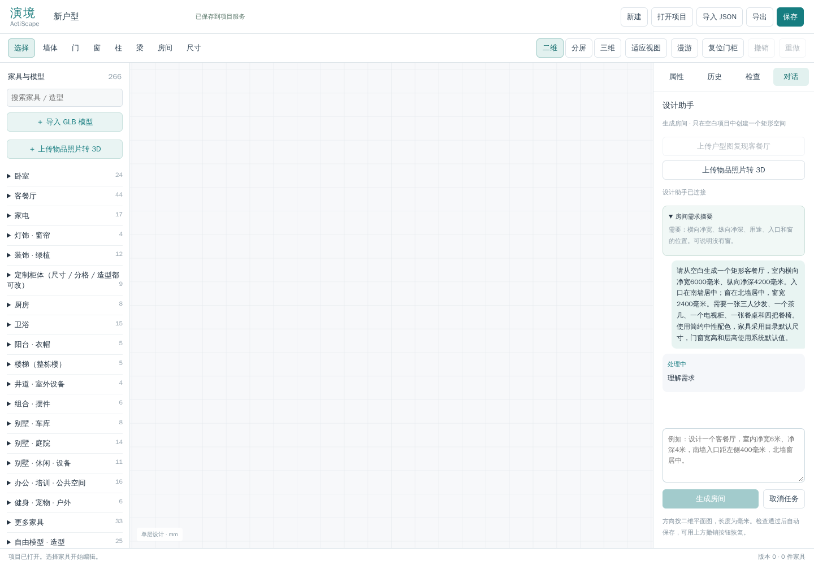
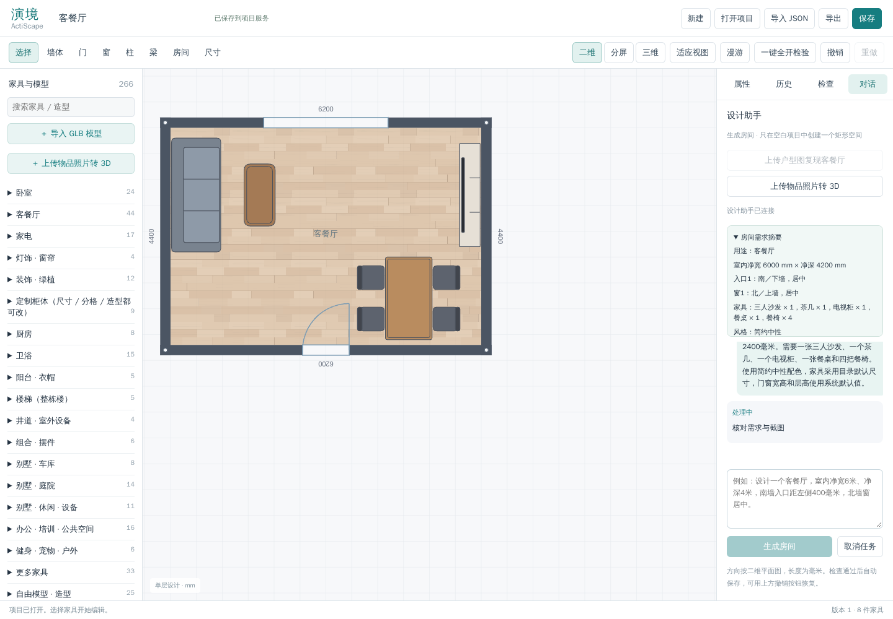
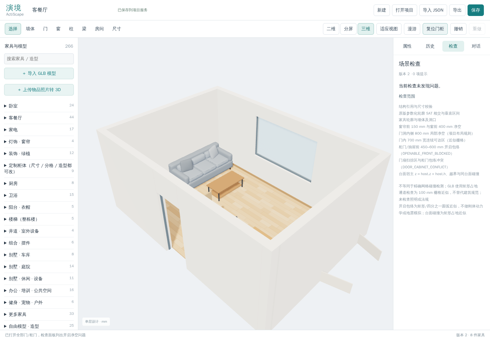
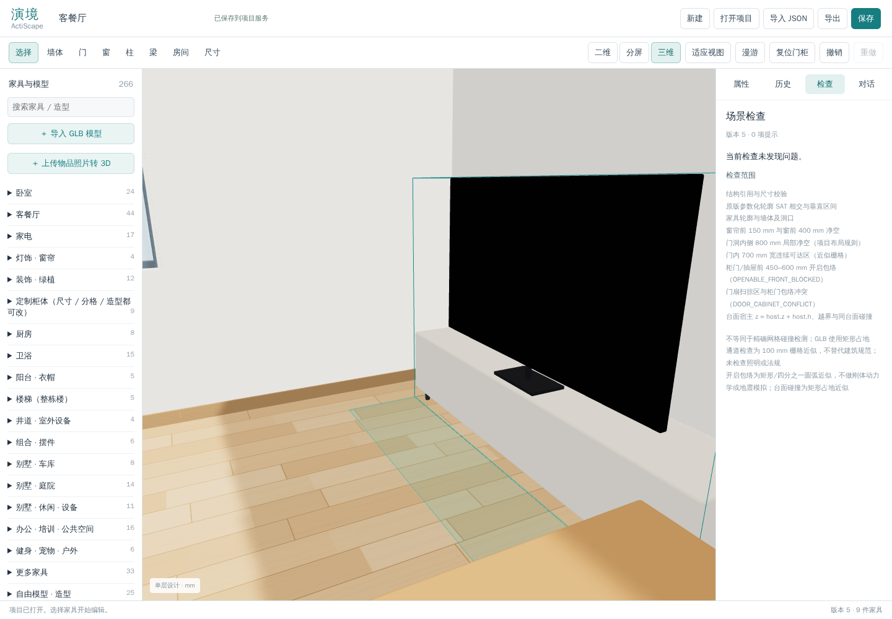
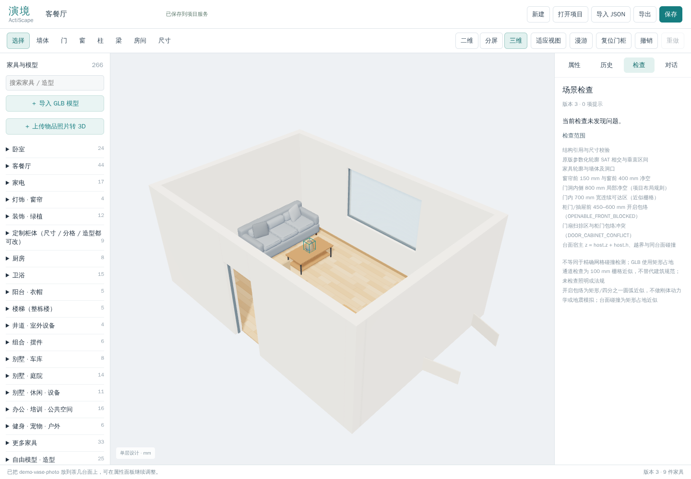
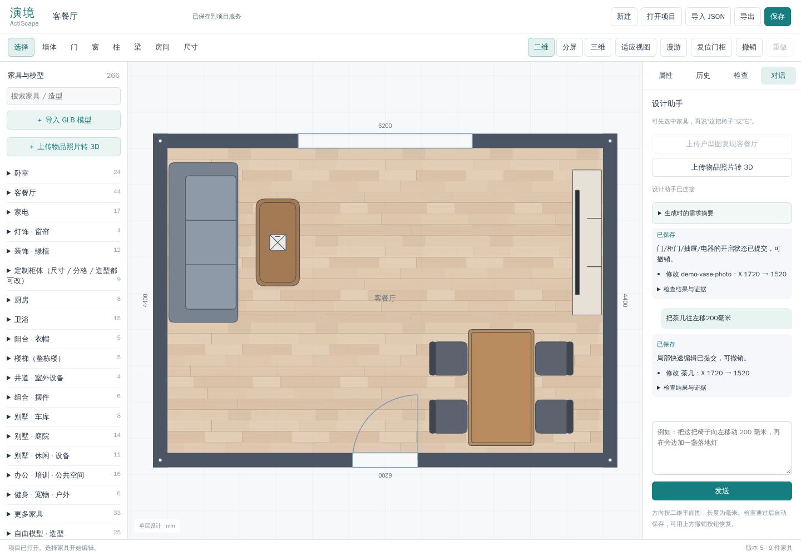
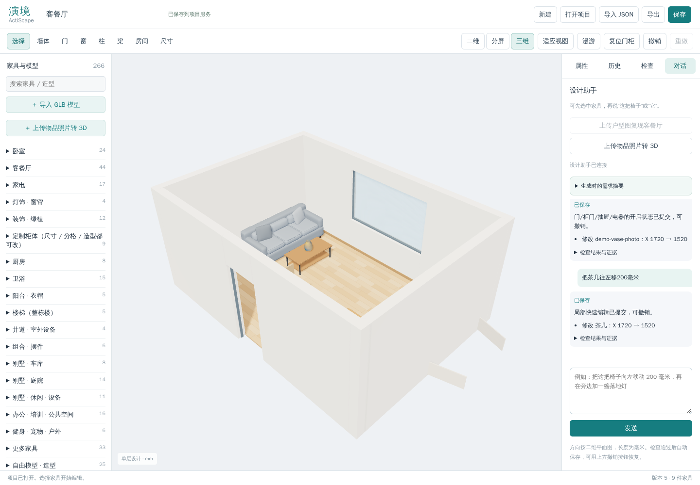
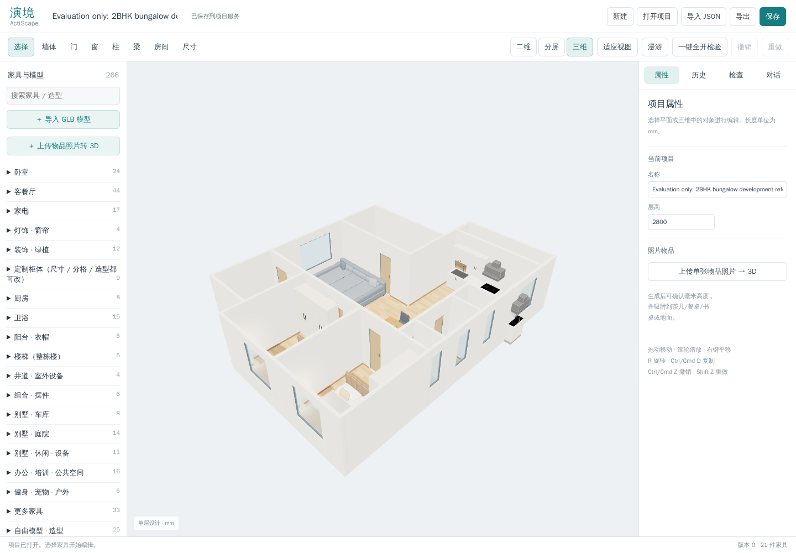

A 客餐厅 + B 全屋：本地工作台演示
真实 DeepSeek 生成 · Candidate → CheckScene → Commit · 动作包络 · 照片演示资产 · 对话快速编辑 · 冻结 2BHK 全屋 · 2026-11-11









服务：apps/service + apps/agent（本地 3013/3004） · 项目 aaeb728a…（A）/ 41bbc02d…（B）所有写入均经过 Candidate → CheckScene → Commit；照片为 demo 资产，非真实 V100。